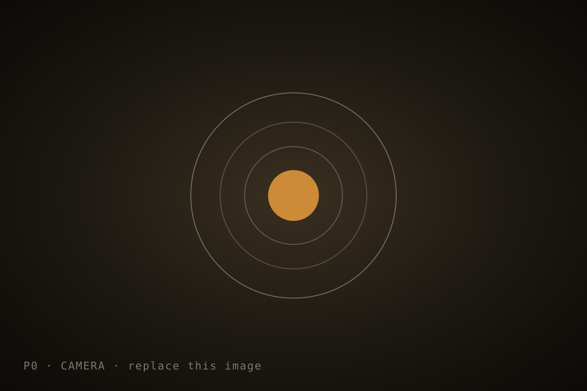
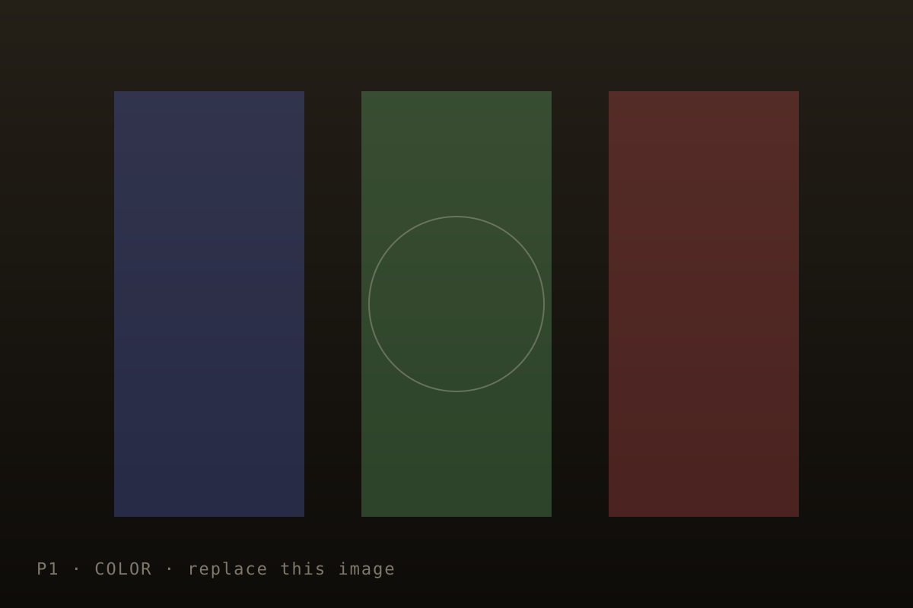
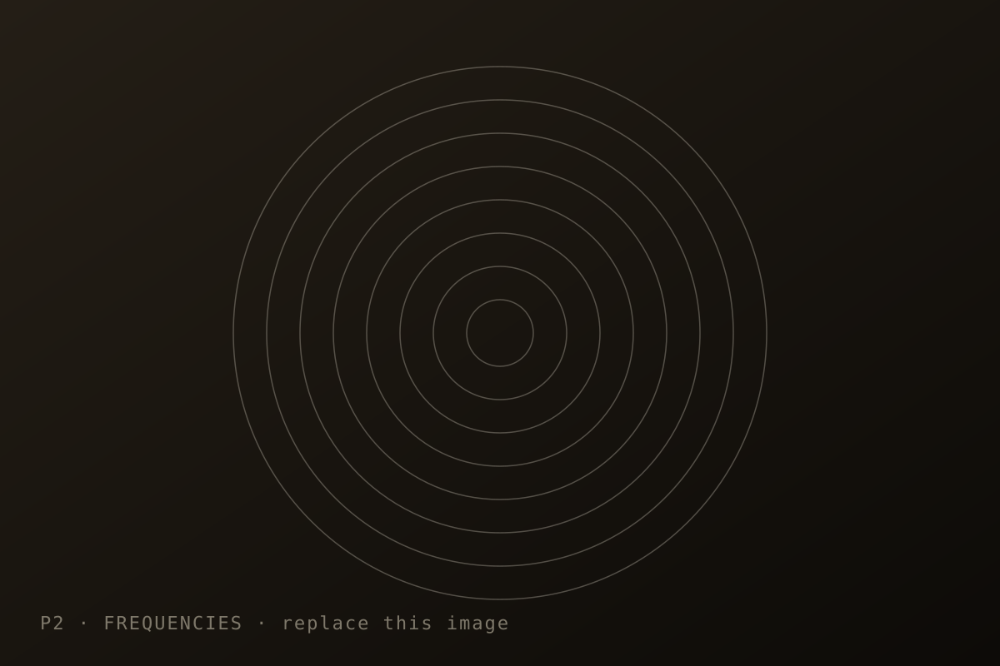
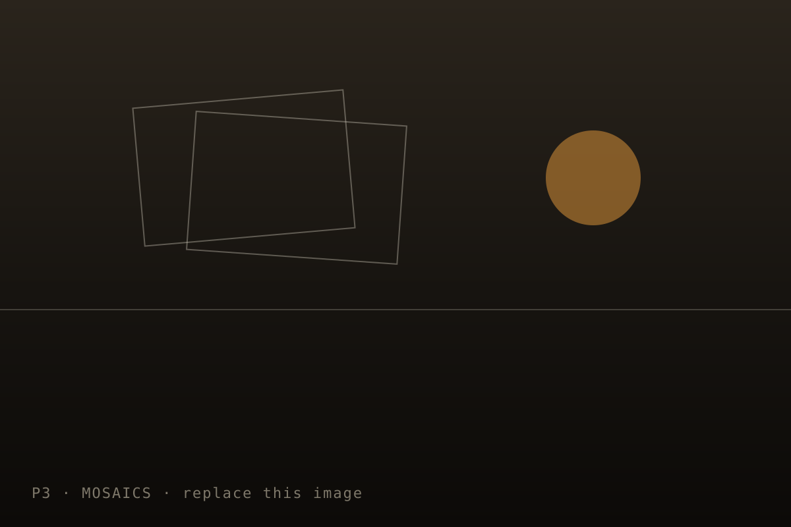
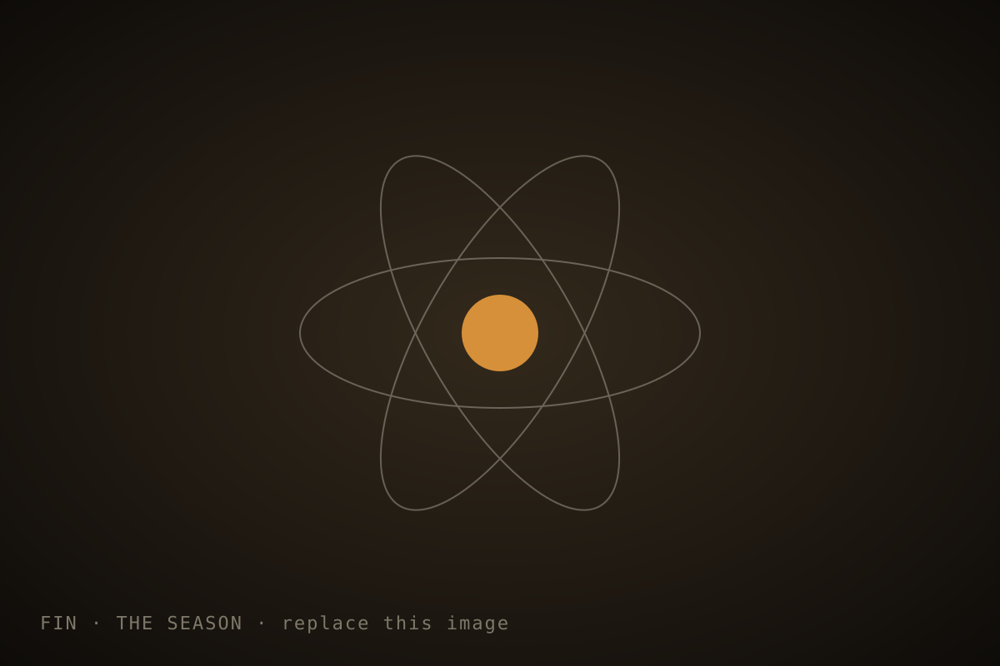

P0  Camera Becoming friends with your camera — perspective, focal length, and why you should step back. focal lengthperspectivedolly zoom
P1  Russian Empire Colorizing the Prokudin-Gorskii glass plates with automatic registration. colorizationregistrationglass plates
P2  Filters & Frequencies Sharpening, blending, and the hybrid images that hide in plain sight. hybrid imageslaplacian stacksfrequencies
P3  Warping & Mosaics Stitching overlapping views into a single panorama. homographystitchingransac
FIN  Final The season in review — every experiment, one contact sheet. reviewcontact sheet